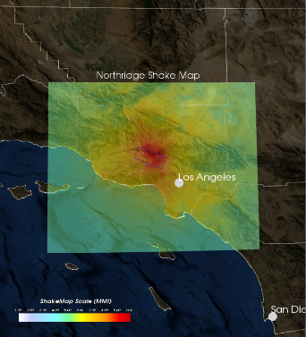

| Home | Projects | Experience | Activities |
|---|
Southern California Earthquake Center (June-August 2016)
My role for this internship was to help develop SCEC-VDO, which stands for Southern California Earthquake Center Virtual Display of Objects. SCEC-VDO is an opensource 3D software which helps users visualize different sets of earthquake data, such as faults, earthquake sequences, hazard maps, and shake maps. The software is written in Java. During my internship, a new version of SCEC-VDO was under development. This version used the Visualization Toolkit (vtk) package. The previous version was supported by Java-3D, which is now outdated. My job was to port over functionalities from the old version and program new features on top of that. I primarily focused on developing shake maps. I added features that allow users to import a map from the Unites States Geological Survey (USGS) website or load custom shake map files made my SCEC's shake map generator. Users can also set the transparency of each map. I also worked on allowing users to save their projects, which I did by writing the values of class attributes to xml files (and then reading from the xml file to load that data).
Lab Tutor: Programming with Software Libraries (January-March 2016)
I was a tutor for ICS 32. In this course, the students use methods from the python standard library, such as pathlib for file and directory access and sockets for communcation and networking with servers. I clarify the instructions for the students and give suggestions on how to begin the assignment. I also help them with debugging by reading through their code and explaining my thought process on how to approach the problem.
Lab Tutor: Introduction to Computer Science (January - March 2015)
I was a tutor for the introductory computer science class (ICS 31) during the winter quarter of 2015 (January to March). I worked three days a week (2 hours each day) for ten weeks, and I helped about 5-8 students a session. The students were learning python, and most of them were in other majors and took this class and a g-ed. Since these students never programmed before, I had to clearly explain technical concepts to them (primitive data types, operators, etc) and really motivate them. It was a fun experience, and I may do it again.